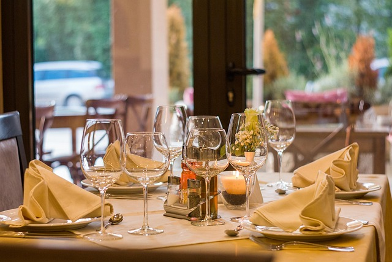

Erleben Sie ein unvergessliches Gourmet-Abenteuer.
Seit 2008 beginnt der junge Chef eine prestigeträchtige Laufbahn in den schönsten Pariser Etablissements wie dem Sensing*, ETC* und dem Pavillon Ledoyen*** an der Seite von Christian Le Squer. Im Jahr 2012 tritt er als Chef de Partie in das Restaurant Lasserre** ein, später wird er Sous-Chef. Anschließend begleitet er Christophe Moret ins Shangri-La, um dort sein stellvertretender Küchenchef im Restaurant L’Abeille** zu werden. 2019 übernimmt er seine erste Chefposition im Loiseau Rive Gauche und erhält 2020 einen Stern im Michelin-Führer.
Für sein erstes Restaurant hat Omar nichts dem Zufall überlassen. Gemeinsam mit dem Architekturbüro Hauvette und Madani entwarfen sie die Konturen eines Restaurants mit Art-Déco-Akzenten. Sobald man die Tür überschreitet, steht man vor einer majestätischen Theke aus Holz und Marmor, die die Lebhaftigkeit der Küche offenbart, wo die Magie geschieht. Im Anschluss lädt ein Korridor mit rot lackierten Wänden dazu ein, den warmen, in Reihe angeordneten Speisesaal mit Nischen für intimere Momente zu entdecken.
Omar vertritt eine moderne Gastronomie, die jedes Produkt veredelt und gerne Einflüsse aus der Küche seiner Kindheit einfließen lässt. Er entwickelt jede seiner Kreationen aus Gemüse. „Ein Gericht aus einem Gemüse zu kreieren, gibt mir mehr Freiheit, da die Anlieferung regelmäßiger ist im Vergleich zu Meeresprodukten, die je nach Fang des Tages variieren“, erklärt er. Bei der Ankunft wird ein Karkadé - ein traditionelles ägyptisches Getränk auf Hibiskusbasis - als Willkommensgetränk serviert. Auf der Karte finden sich erfrischte Muscheln mit einem pflanzlichen Saft oder das Croq Ris de Veau, verfeinert mit einem Grenoble-ähnlichen Gewürz. Die Zucchini wird von der Blüte bis zum Stängel verarbeitet, zusammen mit Sepia und Pistou aus sizilianischen Pistazien. Um das Mahl abzuschließen, verwandelt sich die traditionelle Mignardise in einen Grießkuchen mit Orangenblüten - die Madeleine de Proust des Chefs - serviert auf englische Art. Ein neues Restaurant, das nächste Ziel der Gastronomie von morgen.
📍 123 Rue du Gourmet, Paris
📞 +33 1 23 45 67 89
✉️ contact@laperlegourmande.fr